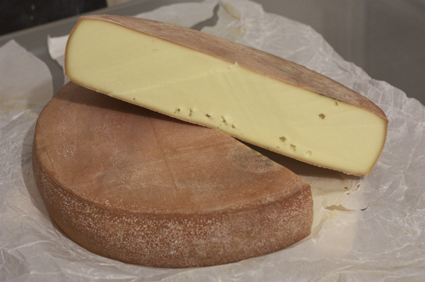

B6.1 Mass of System and Center of Mass#
B6.1.1 Motivation#
We are now moving into the regime of investigating extended objects, that is, objects where size and shape may play a role. This is in contrast to the point particle concept. In doing so, explaining the dynamics quickly becomes complicated as we keep track of individual particles making up an object.
Fortunately, in many instances, we do not worry about the dynamics of each particle in an object but instead interested in the collective dynamics. The center of mass or CM is a key parameter to describe such collective behavior.
B6.1.2 Mass of a system#
In a classical, or everyday life, the mass \(M\) of a discrete system of \(N\) particles is the sum of the masses \(m_i\) of the individual particles
If the system is a continuous system, that is \(N \rightarrow \infty\), we find the mass through
B6.1.3 Concept of Density#
The definition of mass used for example in chemistry is not based on physical principles (physics arrogance shining bright). Instead, it is based on common sense approach: a measure of how much matter there is in a substance and does not apply to a point particle.
For example, if you are lifting a bucket of rocks with a total mass of 12 kg and add a rock with a mass of 1.5 kg, then the total mass is 13.5 kg, common sense, right? Yes, for macroscopic and every objects this makes sense.
However, when we are dealing with objects in the quantum realm such as atoms and nuclei, we find that it does not work that way. For example, consider a Helium consisting of 2 protons, 2 neutrons, and 2 electrons. If we add the individual masses of these particles, we do not get the total mass of the Helium atom. Instead, the Helium atom has slight less mass due to conversion of mass to energy to bind the nucleons together. This was realized by Albert Einstein in 1905 and made famous through his \(E = mc^2\) equation.
For the purpose of our class, we will deal with macroscopic objects and can take the common sense approach. In this approach, we will need to know how dense an object is, or its mass density. Depending on whether we are considering 1D, 2D, or 3D objects we can describe the mass through its mass density (linear, surface, volume) and its geometrical space (length, area, volume).
Let us consider the three spatial extends separately.
1D Object#
A 1D object is something that can be described by a length \(L\). If we consider a straight line object like a rope straigthen out in the x-direction, then a small segment of the rope will have a length \(dx\). The mass of that small segment is then the linear mass density (\(\lambda\)) of that segment times its length:
and the mass of the rope is
where we integrate over a length of interest bounded by \(x_1\) and \(x_2\).
If the linear mass density is constant, then we have
where \(L\) is the length of the object.
Example 1
A copper wire has a linear mass density of 30.0 g/m. To wire a house, a contractor used 300.0 m of this copper wire. How much mass does this amount of copper have?
Solution
In this case the linear mass density is constant, and the total mass is (converting from g to kg)
Example 2
A tapered copper wire of length \(L\) has a linear mass density giving by \(\lambda (x) = (30.0~\textrm{g/m})(1-\frac{x}{L})\). If the length of the wire is exactly 100 m, what is its mass?
Solution
In this case the linear mass density is not constant and we must integrate across the wire to obtain the mass:
Evaluating the limits and using \(L = 100\):
2D Object#
We can extend the 1D formulation above to the 2D case by introducing the area mass density: \(\sigma\). The mass of an object with a small area element \(dA\) is then
and the total mass of an object is
where we are integrating over some area.
If the area mass density is constant, we have

After gaining confidence in 1D, let us move up to 2D. After getting a rope for our whip, we are now looking at a wheel of cheese. This is a big disk of cheese, in fact, so big that its diameter is much larger than its thickness and we can approximately say it is 2D. The cheese is full of holes and its density is (area mass density) \(\sigma = 45.0\left(\frac{r}{R}\right)^2\), and the radius of the cheese is \(R = 0.30\) m. The unit of the density constant is kg/m\(^2\).
Consider a disk with surface area \(A = \pi r^2\). Use the definition of the differential to show that the area differential is \(dA = 2\pi rdr\)
Calculate the mass of the cheese.
3D Object#
Guess what? We can extend the 1D an 2D formulations above to the 3D case by introducing the volume mass density: \(\rho\). The mass of an object with a small volume element \(dV\) is then
and the total mass of an object is
where we are integrating over some volume.
If the area mass density is constant, we have

A bottle of wine goes with the cheese. We find a cylindrical bottle of wine with a radius of \(R = 3.00\) cm and height \(H = 0.30\) m. The density (volume) of the wine is \(\rho = 998.0\left(\frac{h}{H}\right)^2\), with h = 0 m being the bottom of the wine bottle. The unit of the density constant is kg/m\(^3\).
Write down the volume of a cylinder.
Find the volume differential in terms of the height differential.
Find the total mass of the wine.
B6.1.4 Center of Mass#
The center of mass of a concept describing the statistically weighted distribution of mass in a system. In plain words: if all the mass of a system was concentrated in a single spatial point, that point/position would the be center of mass.
For a system of discrete objects the center of mass is defined as
It may be helpful to write out the summations
In the case of a continuous system we have
Example 3
Consider three point masses (\(m_1 = m_2 = 1.00\) kg and \(m_3 = 2.00\) kg) located at \((x,y) = (1.0~\textrm{m},0.0~\textrm{m}),~(2.0~\textrm{m},0.0~\textrm{m})\), and \((0.0~\textrm{m},2.0~\textrm{m})\), respectively. Find the center of mass of this system.
Solution
We have the individual masses and components of the particles, so we can plug into the equation defining the CM position vector:
The water molecule consist of an oxygen atom (\(m_{O} = 16\) u) and two hydrogen atoms (\(m_{H} = 1.0\) u), where \(u\) is the atomic mass unit. The hydrogen atoms are located at a distance of \(d = 9.57\times 10^{-11}\) m from the center of the oxygen atom and separated by an angle of \(105^\circ\). Find the center of mass of the water molecule and make a sketch to illustrate its location.
A \(2000.0\) kg SUV is moving along a straight, flat highway at \(+10.0\) m/s. At a given instant a sedan, with a mass of \(1000.0\) kg and velocity of \(+20.0\) m/s, has its center of mass \(40.0\) m ahead of the center of mass of the SUV. Where is the center of mass of the system at this instant? Give your answer relative to the SUV.
B6.1.5 Linear Velocity of Center of Mass#
The definitions and equations of kinematics can be applied to the CM as well. The linear velocity of the CM is
It may be helpful to write out the summations
In the case of a continuous system we have
A 2000.0 kg SUV is moving along a straight, flat highway at +10.0 m/s. A sedan, with a mass of 1000.0 kg and velocity of +20.0 m/s, has its center of mass 40.0 m ahead of the center of mass of the SUV.
Find the velocity of the center of mass relative to the SUV.
Find the velocity of the center of mass relative to a stationary ground-based observer.
B6.1.6 Linear Acceleration of Center of Mass#
Similarly to velocity, the linear acceleration of the CM is
It may be helpful to write out the summations
In the case of a continuous system we have
B6.1.7 Center of Mass vs. Center of Gravity#
We will often hear the term Center of Gravity (CG). For example, if you balance an object on your finger, the CG is located somewhere along a vertical line above your finger. Hence, when we disucss rotation and balanced objects, the CG plays an important role.
Center of Mass is the average location of all the mass in an object. Similarly,
The Center of Gravity is the average location of the weight (or force of gravity) acting on an object.
For all our purposes, the CG and CM are the exact same location.
When is that not the case? It will require a change in the gravitational field across the body. This happens for very large distances/objects (like satellites and our solar system) or when we are in very strong gravitational systems (like close to a smaller black hole).